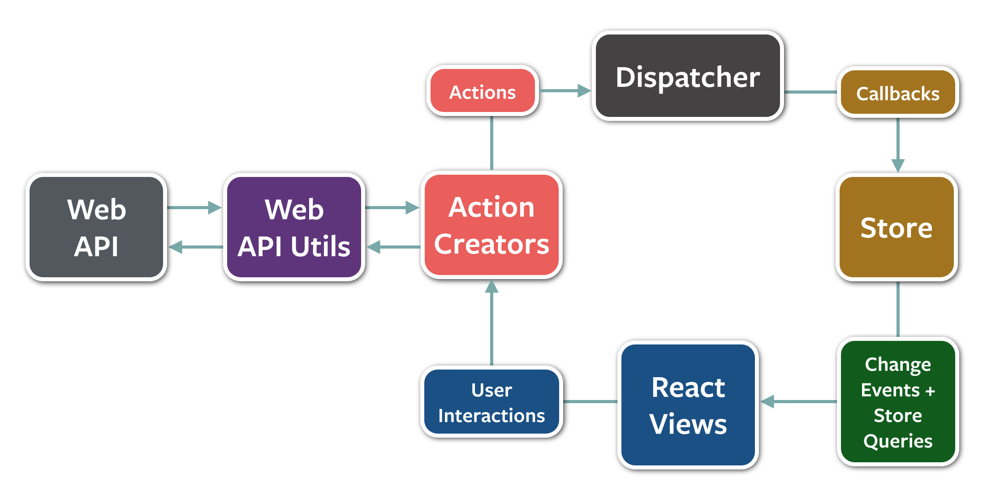

react concepts
What is React about?
- Views
- High performance Virtual DOM implementation
- One-way data flow
- Small API surface
- Encapsulation, Reuse, Separation
basic react view
var App = React.createClass({
render: function(){
return React.DOM.div(null, "Hello React!");
}
});
/** @jsx React.DOM */
/** @jsx React.DOM */
var App = React.createClass({
render: function(){
return <div className="app">"Hello React!"</div>;
}
});
Easier to read, easier to write
Rendering components to the DOM
/** @jsx React.DOM */
React.renderComponent(
Hello, world!
,
document.getElementById('example')
);
JSbin example
Value synchronization across frameworks
- Angular: dirty checking
- Ember: KVO
- React: Virtual DOM
- Backbone: You're on your own
The Virtual DOM
Setting state
var Clicker = React.createClass({
getInitialState: function(){ return { clicks: 0 } },
_onClick: function () { this.setState({ clicks: this.state.clicks + 1 }); },
render: function() {
return (
<div>
<div>{this.state.clicks}</div>
<button onClick={this._onClick}>Increment</button>
</div>
)
}
});
React.renderComponent(<Clicker />, document.getElementById('example'));
JS Bin Example
react-router
React.renderComponent((
<Routes location="history">
<Route path="/" handler={App}>
<DefaultRoute handler={Home} />
<Route name="about" handler={About} />
<Route name="users" handler={Users}>
<Route name="recent-users" path="recent" handler={RecentUsers} />
<Route name="user" path="/user/:userId" handler={User} />
<NotFoundRoute handler={UserRouteNotFound}/>
</Route>
</Route>
<NotFoundRoute handler={NotFound}/>
<Redirect path="company" to="about" />
</Routes>
), document.body);
Server-side rendering
React.renderComponentToString(<App />)
holy grail of server-side render + dynamic client app in one code base with real URLs
Referring to React-router plus React server-side rendering
What server-side rendering really looks like

Wrapping jquery widgets in React components
Who uses React
- Facebook
- Instagram
- Khan Academy
- Netflix
- CloudFlare
- AirBnB
- Yahoo Mail
- Atlassian
- Github (Atom Editor)
- ... and dozens more
React is just the view layer, it doesn't give you
- routing
- models
- computed properties
- filters
- ajax
- controllers
- stores
Facebook recommends a flux architecture
flux quick overview
